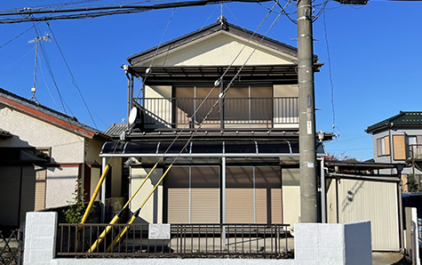
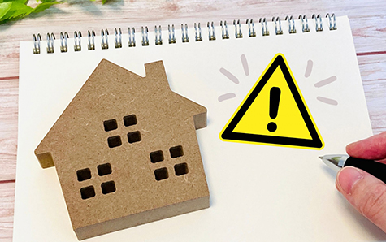
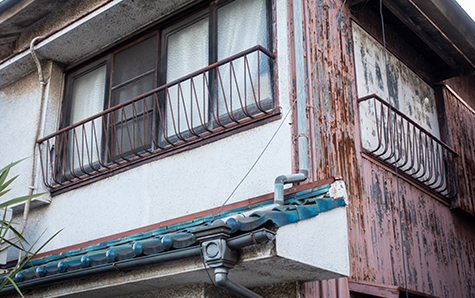
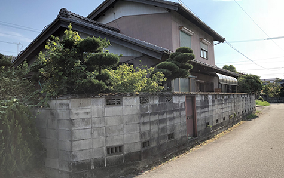

空き家の管理・
不要な不動産を整理したい
- ホーム
- 空き家の管理・不要な不動産を整理したい
空き家の管理・不要な不動産を整理したい
相模原市・厚木市で、使っていない空き家や不要になった不動産を所有している方へ、アイモットが管理と資産整理の考え方をご案内します。空き家は、誰も住んでいなくても税金や管理費がかかり、火災、台風、空き巣などのリスクもあります。
代表が現在の負担と将来の利用予定を整理し、管理を続けるか、手放すかを一緒に考えます。
空き家の管理を先延ばしにしていませんか？

誰も住んでいない実家や、使っていない土地・建物は、「今すぐ困っていないから」と後回しになりがちです。しかし、空き家は何もしなくても費用がかかり、建物の劣化も進みます。遠方にあり管理できない、見に行くことが面倒になっているという場合は、問題が起きる前に今後の方針を整理することが大切です。
このようなお悩みはありませんか？
- 定期的に見に行くことが面倒になっている
- 遠方にあり、建物の状態を確認できない
- 固定資産税や管理費だけを払い続けている
- 草刈りや清掃の負担が大きい
- 台風や大雨のたびに心配になる
- 火災や空き巣、不法侵入が不安
- 家族へ管理や処分の負担を残したくない
- 手放したいが、何から始めればよいか分からない
空き家は使っていなくても費用がかかります

空き家を利用していなくても、固定資産税、保険料、管理費、修繕費などの負担は続きます。マンションでは管理費や修繕積立金、戸建てでは草刈りや庭木の手入れ、屋根・外壁の補修が必要になることもあります。
毎年の支出と今後の利用予定を確認し、保有を続ける意味があるかを見直しましょう。
見えにくい管理費用も積み重なります
税金だけでなく、現地までの交通費、草刈り、清掃、郵便物の確認、設備の修繕などにも費用と時間がかかります。一回ごとの負担は小さくても、数年間続けば大きな金額になります。
年間でどの程度かかっているかを整理すると、管理を続けるか判断しやすくなります。
建物の劣化で将来の負担が増えることもあります
人が住まなくなった建物は、換気や通水がおこなわれず、湿気、カビ、雨漏りなどが進みやすくなります。劣化が進むと修繕費や解体費が増え、売却時の条件にも影響する可能性があります。現在の状態が分からない場合は、早めに現地を確認しましょう。
火災・台風・空き巣などのリスクがあります
管理されていない空き家は、火災や台風による破損、空き巣、不法侵入、不法投棄などの被害を受ける可能性があります。必ず被害が起きるわけではありませんが、人の出入りがなく、異変に気づきにくい状態では、被害の発見や対応が遅れやすくなります。
※表は左右にスクロールして確認することができます。
| リスク | 考えられる問題 |
|---|---|
| 火災 | 放火、漏電、周囲への延焼 |
| 台風・大雨 | 屋根や外壁の破損、雨漏り、飛散物 |
| 空き巣・不法侵入 | 盗難、建物の損傷、不法使用 |
| 不法投棄 | ごみの撤去費用、衛生上の問題 |
| 庭木・雑草 | 隣地への越境、害虫、近隣からの苦情 |
| 建物の老朽化 | 部材の落下、塀や建物の倒壊 |
火災は周囲へ被害が広がる可能性があります
空き家の室内や敷地に家具、段ボール、落ち葉などが残っていると、火災時に燃え広がりやすくなる可能性があります。人が住んでいないため、発見が遅れることも考えられます。可燃物や電気設備の状態を確認し、定期的に管理できる体制を整えることが大切です。
台風のたびに現地を心配する状態が続きます
古くなった屋根材や外壁、庭木などは、強風で飛散する可能性があります。遠方に住んでいる場合は、台風後にすぐ確認できず、不安を抱え続けることになります。建物の状態を確認し、管理を続ける費用と手間を見直しましょう。
空き家と分かる状態は防犯面でも不安があります
郵便物がたまっている、雑草が伸びている、夜間も人の気配がないといった状態は、空き家であることを知られやすくします。空き巣、不法侵入、不法投棄などが起きると、対応にも時間と費用がかかります。定期的に確認できない場合は、管理や売却について相談することが必要です。
管理不足は近隣トラブルにもつながります

空き家の問題は、所有者だけの問題ではありません。庭木の越境、雑草、害虫、屋根材の落下、建物の傾きなどにより、近隣から苦情を受ける可能性があります。問題が起きてから急いで対応するのではなく、建物や敷地の状態を把握し、緊急時に対応できる方法を決めておきましょう。
遠方に住んでいても管理の負担は残ります
相模原市・厚木市に空き家があり、所有者が遠方に住んでいる場合も、管理の必要性は変わりません。現地へ行く交通費や時間に加え、業者との立ち会いが必要になることもあります。何度も足を運ぶことが難しい場合は、代表が現地の状況を確認し、必要な対応を整理します。
不要な不動産を資産整理の視点で見直しましょう

使っていない不動産を手放すことは、単なる処分ではありません。管理費や税金がかかる資産を整理し、売却して現金化し、生活資金や将来の備えに活用する方法の一つです。今後使う予定があるか、年間でいくら負担しているか、家族が管理を引き継げるかを確認しましょう。
将来使う予定が
あるかを確認する
「いつか使うかもしれない」という理由だけで保有を続けると、具体的な利用時期がないまま費用が積み重なる可能性があります。誰が、いつ、どのように使用する予定なのかをご家族で話し合いましょう。
予定が決まっていない場合は、期限を設けて再検討することも大切です。
家族へ負担を残さないために整理する
所有者が管理できなくなった場合、空き家の片付けや処分はご家族が引き継ぐことになります。名義や書類、建物の状態が分からないままでは、さらに手続きが難しくなります。元気なうちに不動産の価値と維持費を確認し、今後の方針をご家族と共有しましょう。
年間の維持費と査定価格を比較する
固定資産税、管理費、保険料、草刈り、修繕など、年間にかかる金額を整理します。そのうえで、不動産の査定価格を確認し、今後も保有する価値があるかを比較しましょう。
査定を受けたからといって、必ず売却する必要はありません。
管理を続けるか、手放すかを判断します
空き家を所有しているからといって、必ずすぐ売却する必要はありません。近い将来使用する予定があり、費用と手間を負担できる場合は、管理を続ける選択もあります。
一方、利用予定がなく、管理が煩わしい、維持費が重い、災害や防犯面に不安があるという場合は、早めに整理を検討しましょう。
| 現在の状況 | 検討したい方向 |
|---|---|
| 近いうちに使用する予定がある | 管理方法を整える |
| 将来の利用時期が決まっていない | 期限を決めて保有を再検討 |
| 管理や維持費が大きな負担 | 仲介や買取を比較 |
| 建物状態が分からない | 現地確認・査定を依頼 |
| 火災や防犯面が心配 | 管理体制の整備または早期整理 |
| 家族へ負担を残したくない | 資産整理として売却を検討 |
| 現在の状況 | 近いうちに使用する予定がある | 将来の利用時期が決まっていない | 管理や維持費が大きな負担 | 建物状態が分からない | 火災や防犯面が心配 | 家族へ負担を残したくない |
|---|---|---|---|---|---|---|
| 検討したい方向 | 管理方法を整える | 期限を決めて保有を再検討 | 売却や買取を比較 | 現地確認・査定を依頼 | 管理体制の整備または早期整理 | 資産整理として売却を検討 |
空き家の状態や売却期限に合った方法を選びましょう
空き家を売却する場合は、時間をかけて高値を目指す仲介と、早く手間を抑えて整理しやすい買取があります。建物の状態、残置物、売却期限などによって適した方法は異なります。詳しい売却方法は、空き家・空き地・訳あり物件のページでご確認ください。
早く負担をなくしたい方は買取も検討できます
管理の負担や災害リスクから早く解放されたい場合は、不動産会社による買取も選択肢です。内覧や片付けの負担を抑えられる可能性があります。詳しい特徴と注意点は、「早く売りたい」ページでご案内しています。
空き家の管理・資産整理を相談する流れ
- STEP1 現在の状況を伝える
- 物件所在地、名義、利用状況、現地を最後に確認した時期など、分かる範囲でお知らせください。書類が見つからない場合や、建物の状態が分からない場合もご相談いただけます。
- STEP2 建物と管理状況を
確認する - 代表が現在の状態、維持費、管理上の問題を整理します。遠方で現地へ行けない場合は、確認方法をご相談します。火災や台風、防犯など、優先して対応すべきリスクも確認します。
- STEP3 管理を続ける場合と手放す場合を比較する
- 今後の利用予定、年間の維持費、査定価格を確認します。管理を続ける場合に必要な対応と、仲介や買取で手放す場合の条件を比較し、負担の少ない方法を考えます。
- STEP4 必要な方法へ進む
- 管理を続ける場合は管理体制を整え、売却する場合は物件の状態に合う方法をご提案します。残置物、清掃、解体などが必要な場合も、先に費用をかけるべきかを確認してから進めます。
空き家を放置せずご相談ください
空き家や不要な不動産は、すぐに問題が見えなくても、管理費や税金がかかり続けます。火災、台風、空き巣、近隣トラブルが起きてからでは、対応に大きな負担がかかる可能性があります。
相模原市・厚木市で使っていない不動産を所有している方は、まず現在の状態と維持費を確認しましょう。
管理と資産整理を一緒に考えます
アイモットでは、代表が直接お話を伺い、管理を続ける場合と手放す場合の費用や負担を整理します。売却を決めていない段階でも問題ありません。
遠方にある、荷物が残っている、長期間現地を確認していないといった場合も、何から始めるべきかをご案内します。